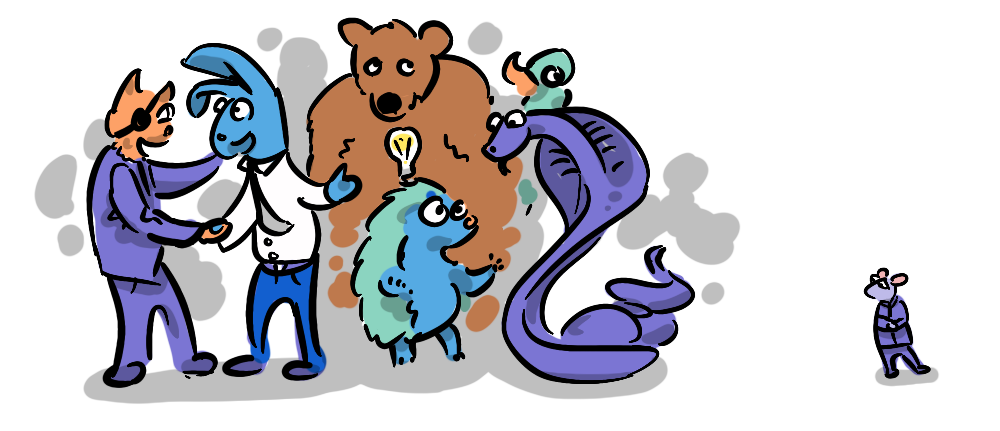

The news today is characterised by conflict, war, sanctions, tariffs and fracturing allegiances, distracting from the monumental issues we must face globally like climate change, inequality and AI. This post unpacks the cost of conflict in geopolitics today, by looking to theories of International Relations from a non-zero-sum perspective. We will learn about the two big approaches; Political Realism and Political Liberalism, and ask "which is really more realistic and sustainable?".
There's a famous scene in Austin Powers: International Man of Mystery (1997) where Dr Evil awakens in the present day. In the boardroom of Virtucon—which he explains is "the legitimate face of my evil empire"—he proposes to hold the world to ransom for "one million dollars".
Number Two, who has been running Virtucon for 30 years while Dr Evil has been in cryostasis, argues that a million dollars isn't exactly a lot of money these days, after all…
"Virtucon alone makes over nine billion dollars a year."
In the sequel The Spy Who Shagged Me (1999), in a meeting held in the "Starbucks World Headquarters" Number Two suggests shifting resources "away from evil empires and towards Starbucks ". Legitimate business dealings, that were intended only as a front, are now more profitable than criminal activity, but, despite this, Dr Evil continues to pursue his malevolent designs.
This scene keeps returning to my mind when I look around at the world today, and recognise a series of geopolitical own goals. Putin's ongoing invasion of Ukraine and Trump's imposition of tariffs on allies in particular strike me as 'Dr Evil thinking'—a zero-sum mentality. In the pursuit of global dominance these actors have placed short-sighted national interests over the mutual benefits afforded by international peace and free trade.
This mentality brings into high-relief the difference, in the realm of international relations, between political liberalism and political realism—otherwise known as…
... REALPOLITIK
Politics based on practical objectives rather than on ideals. The word does not mean "real" in the English sense but rather connotes "things"—hence a politics of adaptation to things as they are. Realpolitik thus suggests a pragmatic, no-nonsense view and a disregard for ethical considerations. In diplomacy it is often associated with relentless, though realistic, pursuit of the national interest.
— Britannica
Political "realism" assumes a zero-sum contest between nations. This can take the form of military dominance, where one country has power over others, can extort money from them, or can literally conquer them. It can also take the form of mercantilism which, as we've discussed in CAPITALISM—a zero-sum game? is when countries seek to export more than they import in order to accumulate more national wealth relative to their trading partners. These two aspects are linked because greater national wealth can then be spent on armed forces, providing military dominance.
This political philosophy follows from the mentality encapsulated by Thomas Hobbes, who proposed that civilisation faces constant threat from a state of nature which is…
"... solitary, poor, nasty, brutish, and short."
— Thomas Hobbes (Leviathan)
A couple of years ago I picked up one of my wife's textbooks on International Relations, I don't know why, it was a primer for an honours course, and it was dense! Covering every geopolitical philosophical framework of the 19th and 20th centuries from Kantianism to Critical Theory, and involved a lot more philosophy than I was expecting, from Aristotle to Deleuze. It was a slog, but it did help me understand the dynamics at play, and the tension that exists between two over-arching approaches.
International Relations operates in a mode referred to as "international anarchy" which sounds pretty crazy. But it makes sense, because there is no global governing body, and so geopolitics plays out between national governing bodies in a dynamic, anarchic way. Political realism sees this as an ever-present threat to national sovereignty, identity and survival, which is why it results in defensive, isolationist foreign policy. But there is another way to look at things.
A non-zero-sum way of approaching the anarchic international relationship is political liberalism, where autonomous nations allow for free trade to build mutual benefits, and create allegiances between nations that function interdependently.
Liberalism is a school of thought within international relations theory which revolves around three interrelated principles: Rejection of power politics as the only possible outcome of international relations ; mutual benefits and international cooperation; the role of international organisations and nongovernmental actors in shaping state preferences and policy choices.
— Wikipedia
This creates a situation where conflict is disincentivised because it comes at a huge cost (by disrupting the market). If Dr Evil's plans end up creating bad press for Virtucon, they stand to lose billions. This was observed by Kant in "Perpetual Peace", one of the founding works of political liberalism in international relations.
"Sooner or later in any state the spirit of commerce will get the upper hand, and it can't co-exist with war."
— Immanuel Kant (Perpetual Peace)
The mutual benefit of political liberalism is what elevates all parties involved out of the Hobbesian state of nature—without requiring losing parties.
I find it interesting that Hobbes saw fit to start his list of maladies with "solitude", because, although solitude sounds much less negative than "… poor, nasty, brutish, and short", it is the root of the problem. It is the lack of cooperation and coordination that makes lives "nasty". Political liberalism overcomes these by overcoming solitude—by encouraging interdependence.
Political realism on the other hand leads to defensiveness and isolationism, it actually maintains the "solitary" element of the equation, leading to a "… poor, nasty, brutish, and short" form of existence between nations. It is also extremely costly— global defence outlays hit a modern record $2.7 trillion in 2024. Higher security competition diverts resources from cooperation.
It may not be realistic to believe, as Kant did, that "standing armies shall in time be totally abolished" but we understand that cooperation and coordination are vital within countries—why not between them?
Was Hobbes even right in his assessment of a state of nature?
In Thomas Paine's "Agrarian Justice" he proposed that any advances in modern society should be measured against "the primitive state of man"—he found an approximation of a state of nature in Native American communities, remarking that.
"There is not, in that state, any of those spectacles of human misery which poverty and want present to our eyes in all the towns and streets of Europe."
— Thomas Paine (Agrarian Justice)
What he observed was not an existence that was "… solitary, poor, nasty, brutish, and short", but one where the least well off in the community were better than the least well off in modern "civilised" society—a society that was often neither solitary nor nasty.

Rutger Bregman makes a case that pre-agricultural societies could be very peaceful. In Humankind he explains that the harmoniousness of a society is all about its structure, not about how advanced its technologically is.
Before wrapping up, it's worth mentioning that one way to overcome international conflict is to do away with "international anarchy" and establish a World Government. But, in "Perpetual Peace" Kant warns against world government, arguing it would be prone to Tyranny. There is also an argument to say that it may reduce diversity of political thought, so as to make us inflexible to change, and it may, as we see with the global governance experiment of the UN, be incapable gaining collective buy-in and overcoming the interests of individual superpower nations. So, we may not have the option of coordinating via governance.
Political Liberalism provides a way to create dynamic cooperation with a top-down authority, which encourages unity, not solitude.
Globally, if the aim is security and prosperity, zero-sum moves are own goals. Number Two and Virtucon's legal billions remind us that in the real world, tariffs and invasions burn surplus and trust. International trade partnerships disincentivise conflict which reinforces our understanding that nations are interdependent. Despite the Dr Evils of the world, political liberalism works quietly in the background, rewarding cooperation, and protecting nations by naturally fostering positive allegiances rather than requiring costly protectionism. I would argue it is actually a much more a more realistic approach to accumulating benefits for all over time.
This has been an argument for Political Liberalism in International Relations but is not an argument for absolute Political Liberalism within nations . This is because, while International Relations exists in an environment of "international anarchy", nations themselves do not. Nations do have the option of governance, which can make cooperation even more efficient and productive, and protect the safety and health of citizens, while still leveraging some aspects of liberalism where suitable.